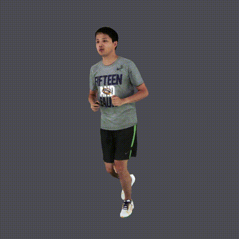
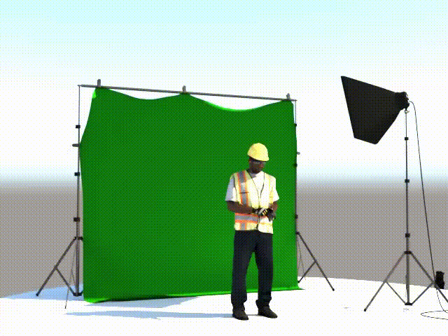
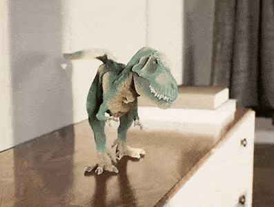
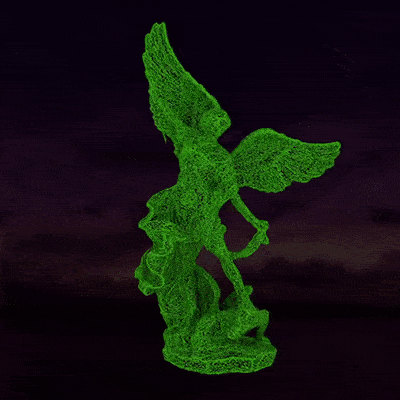

Projects
Volumetric Capture Studio
|  | Digital human |
|  | Digital human, PPE training |
Volumetric Capture Object Scan
|  | Relighting in Virtural Environment |
|  | 3D Model Reconstruction |
Model Used in Unreal Engien |
Volumetric Capture Face Dome
 |
Relighting in Virtural Environment |
Image and Video Inpainting Library Demo
 |
Old movie gate hair removal |
Face Data Generation for Specific Person
 |
Emotion generation for specific person |